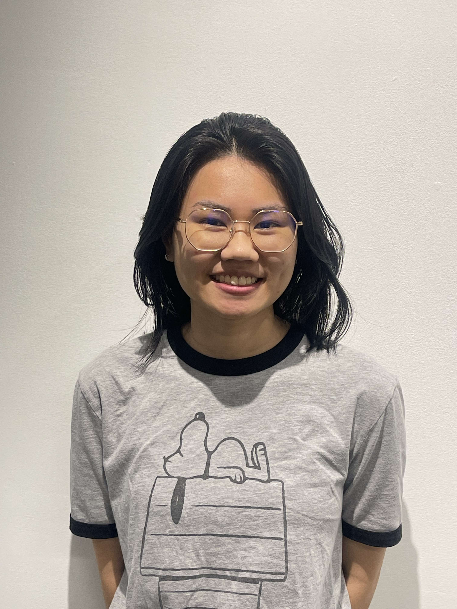

About

My Story
My name is Katie Schantz and I am a digital artist who enjoys using technology to craft visually captivating content. In my more personal projects I enjoy experimenting with different mediums such as paint, photography, and collage. I started out primarily as a self-taught photoshopper making textures for video games, but now am pursuing a Bachelor's of Art in Studio Art at The Ohio State University. I am committed to expanding my creative boundaries and refining my skills. My journey has been driven by a deep love for artistic expression and a desire to inspire others to embrace their own creative potential. Art is my personal form of expression—my voice when words fall short. Through my work, I aim to encourage others to recognize that everyone is an artist, whether they realize it or not. Art has been a guiding force in my life, helping me navigate challenges and offering a sense of liberation during the darkest times. My mission is to share the transformative power of creativity, helping others discover the solace and strength art can bring.
Experience
Community Engagement Arts Administrator
Urban Arts Space | 2025
Selected participant in competitive two-semester Mellon Foundation Community Engagement internship program focused on arts administration, curation, and community engagement.
Gained comprehensive experience in gallery operations and arts administration while contributing to community arts initiatives.
Education
BACHELOR OF ART | Studio Art | Animation Minor
The Ohio State University 2022 - 2026
Associates of Applied science | Computer Science
Columbus State Community College 2020 - 2022